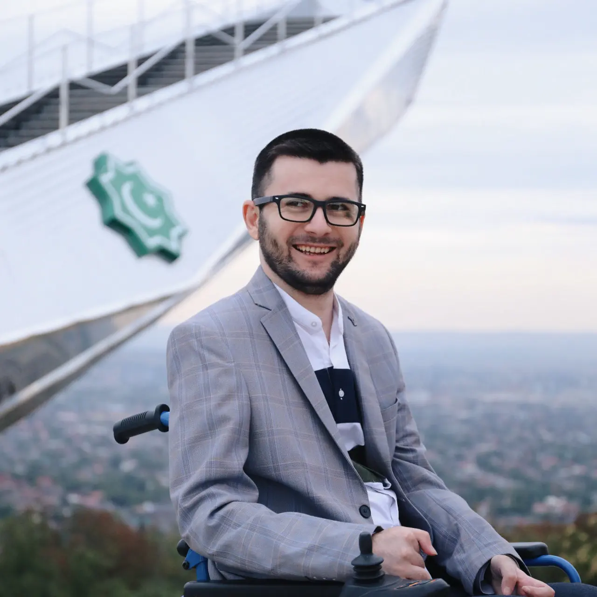
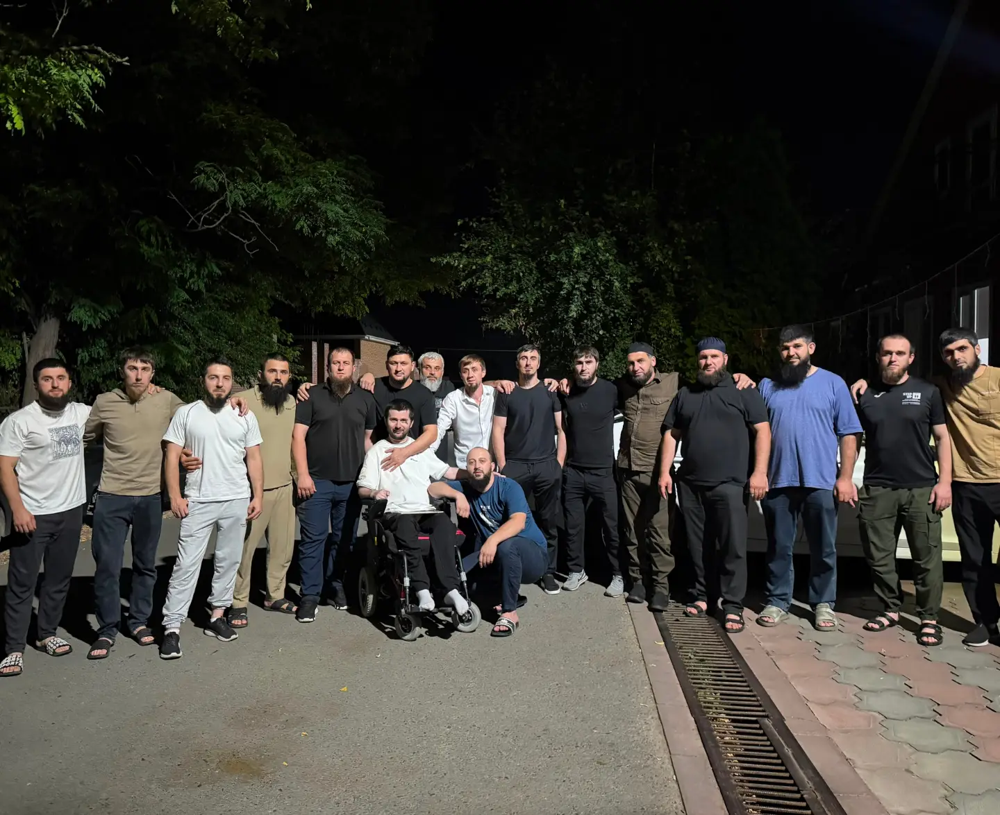
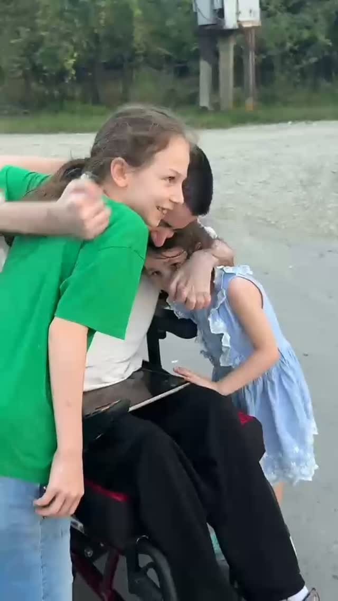
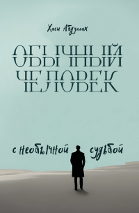

Личный документальный портрет
Хаси
Абдуллах
Автор общественный деятель организатор проектов
Несколько направлений.
Один принцип: польза.

01Масштаб пути
Оглядываясь назад.
- ≈500прочитанных книг к сентябрю 2026
- 25+км дорог в разных общественных инициативах
- 200+деревьев в разные годы
- 12футбольных турниров
- 3улицы с работами по освещению
- 1опубликованная книга
Дороги, освещение и озеленение — результаты общей работы жителей и участников инициатив. Моя роль — организовывать, соединять людей и искать ресурсы.
02Контекст
Жизнь не сводится
к одному повороту.
Я вырос в Валерике, в Чеченской Республике. В юности много значил футбол. Примерно в двадцать лет автомобильная авария изменила мои физические возможности и то, каким я себе представлял будущее.
Потом был долгий период адаптации. Постепенно жизнь начала складываться заново: чтение, вера, учёба, общественная работа, предпринимательство, спорт уже в роли организатора, книга — и позже технологии.
Эта история не о том, чтобы выглядеть героем. Она о конкретных решениях, проектах, людях рядом и о вещах, которые всё ещё не закончены.

Кто я такой и чего хочу!?
03Валерик
Когда проблема рядом — она конкретная.
Большая часть общественной работы связана с родным селом. Не абстрактная благотворительность, а конкретная работа: заметить проблему, собрать вокруг неё людей и довести дело до результата.
- увидеть проблему
- собрать людей
- найти ресурсы
- довести дело до результата

Дороги+
С 2019 года — участие в общественных инициативах, связанных с дорогами. За последующие годы в разных проектах в Валерике было уложено более 25 км асфальта.
Это результат совместной работы: я участвовал в организации, привлечении людей, сборе средств и продвижении вопросов.
Свет и энергия+
Участвовал в организации и восстановлении освещения на трёх улицах. На Степной после общественной работы трансформатор заменили со 150 кВА на 400 кВА и перераспределили нагрузку.
Озеленение+
За разные годы в рамках инициатив было высажено более 200 деревьев. Маленькое действие, которое меняет среду надолго.
Книга → дороги+
50% дохода от продаж книги направлялись на асфальтирование дорог. В совокупности на это было направлено более 420 000 рублей.
Дороги: из публичных материалов
Проект по улице Новая Степная завершён
Началась укладка асфальта на улице Новая Степная
Садакъаджария на асфальт: от центральной мечети до верхнего кладбища
Озеленение и встречи
+ 140 деревьев в Раю
Что случилось с деревьями, которые мы посадили 2 года назад?
Встреча с новым главой администрации Ачхой-Мартановского района
04Спорт
Футбол остался. Изменилась роль.
Первый Кубок Валерика прошёл в июне 2019 года: восемь команд, победитель — «Валерик». Через два месяца, в августе, сыграли второй. С тех пор турниры продолжались и разделились на три серии: шесть Кубков Валерика, три Суперкубка и три турнира Лиги претендентов.
Я вернулся в футбол не игроком, а организатором. Моя команда — «Баракат». В 2025 году в селе появился спортивный комплекс: большое и мини-футбольное поля, волейбольная площадка и воркаут-зона.
Фото турниров, команды «Баракат» и нового спортивного комплекса добавлю, как только соберу архив.
Кубок Валерика: из архива канала
Кубок Валерика №2 — 03.08.19
Кубок Валерика 3 — наш третий финал и первое золото (полный фильм)
Кубок Валерика №4 — ежегодный футбольный турнир в селе Валерик, 12.09.21
От первого турнира 2019 года до спортивной зоны в Валерике
05Книга

«Обычный человек с необычной судьбой»
Автобиографическая книга о детстве, мечтах, футболе, семье, вере, внутренних кризисах, принятии и попытках заново строить жизнь.
Её смысл не только в рассказе. Часть дохода от продаж становилась ресурсом для реального дела в Валерике.
Точную дату выхода пока не указываю — уточню и добавлю отдельно. Ссылки на покупку появятся здесь же, как только соберу их.
О книге: видео
Обычный человек с необычной судьбой — Хаси Абдуллах
Теперь моя книга доступна по всей России!
06HurmaN / Хурман
Не каждый важный проект приходит к финалу.
И это не повод переписывать историю.
Идея HurmaN появилась 12 мая 2017 года: своё пространство для людей с физическими ограничениями — не больница и не учреждение вокруг диагноза, а место общения, занятий, учёбы, спорта и сообщества.
В 2019 году нашёлся спонсор и был приобретён участок в Черноречье. В 2020 году заложили фундамент, в 2021-м строительство продолжилось; в 2022-м оно остановилось, в 2023-м возобновилось. Основная коробка здания была построена.
Но в 2024 году стало известно о возможном сносе территории под жилой комплекс. Пространство не открылось. Сейчас проект заморожен, и по нему сохраняется неясность — но от HurmaN никто не отказывается. Это остаётся одной из самых важных целей, а не историей с выдуманной победой.
Что стало с моим проектом HurmaN? Почему я молчал?
Фото участка и этапов строительства добавлю, когда соберу их вместе. Видео снято ещё на этапе фундамента и не показывает, как объект выглядит сейчас.
07Взгляд
Читай.
Думай.
Действуй.
Верь.
Не счётчик книг. Привычка думать.
Систематическое чтение началось зимой 2017 года. К сентябрю 2026 года — около 500 книг: светских и религиозных, на чеченском и английском языках.
Вера — спокойная, естественная часть мировоззрения и понимания ответственности. В январе 2023 года состоялась особенно важная поездка в Умру вместе с мамой: Медина, затем Мекка.
Мысли из ленты
«У меня есть план…» — размышление перед Рамаданом
Размышление о маме
08Практика
Предпринимательство как школа дела.
Вместе с братом я работаю в направлении рулонных жалюзи и пластиковых окон — в Чеченской Республике и соседних регионах. Моя часть работы: реклама, привлечение клиентов, коммуникация и организация заказов.
Это не рекламный блок. Это опыт маленькой команды: продажи, интернет-реклама, ценообразование и ответственность перед клиентом.
Пластиковые окна, двери, витражи и жалюзи всех видов
09Новая глава
Технологии дают ещё один способ быть самостоятельным.
С конца 2025 года я осваиваю создание цифровых продуктов с помощью искусственного интеллекта. Это AI-assisted development: идея, логика, требования и дизайн — мои; ИИ помогает с кодом, архитектурой и технической реализацией.
- Surface Pro 11
- сенсорный экран
- голосовой ввод
- AI-агенты
Это направление я только осваиваю — не выдаю себя за senior-разработчика. Цель — научиться доводить такие продукты до результата и до устойчивого дохода удалённо.
TanWinреальные посетители+
Приложение для обучения чтению Корана. Человек, который не знает арабского, идёт от первой буквы до чтения по правилам таджвида. Порядок уроков — классическая «Каида Нураниййа», затем таджвид и суры.
В уроках — слова из Корана и записи чтецов. Приложение работает на телефоне и компьютере без регистрации, в том числе без интернета. Оно даёт основу; тонкости чтения ставит учитель.
Проектом уже пользовались реальные посетители. Открыть приложение: tanwin.xasi88.ru (новая вкладка) ↗.
JUMMAреальные посетители+
Цифровая система клуба настольного тенниса в Валерике: рейтинг игроков, лента матчей, личные встречи и витрина рекордов. Каждую субботу клуб играет турнир, и результаты сразу попадают в приложение.
Работает как PWA на jumma.site (новая вкладка) ↗.
Мысли вокругидея+
Экспериментальная геосоциальная сеть: короткие мысли людей в определённом радиусе вокруг пользователя.
Учитель Коранаэтап уточняется+
Идея системы для преподавателей: ученики, занятия, домашние задания, статистика, прогресс и доступ родителей.
Учёт медресе / Roadmap / SaaSэтап уточняется+
Среди направлений — учёт преподавателей и учеников медресе, простое отображение общественных сборов и цифровизация работы с жалюзи. Пока это наброски, а не готовые продукты.
10Хронология
Не прямая линия. Настоящий путь.
Автомобильная авария и начало новой главы жизни.
Начало систематического чтения; 12 мая появляется идея HurmaN.
Первые крупные общественные инициативы, первый Кубок Валерика и участок для HurmaN.
Заложен фундамент HurmaN.
Строительство HurmaN продолжается; поступление на журналистику.
Умра вместе с мамой: Медина, затем Мекка.
HurmaN остаётся незавершённым из-за ситуации с будущим территории.
Спортивная инфраструктура Валерика и новый интерес к AI-assisted разработке.
Дальнейшая работа над дорожными инициативами и цифровыми направлениями.
11Публичный голос
Говорить по существу.
Хаси участвовал в 9-м сезоне проекта ЧГТРК «Грозный» «Искусство говорить» и стал победителем сезона. Были выступления, презентации книги, встречи со студентами и эфиры.
В 2025 году — презентация книги в ГГНТУ и отдельное мероприятие в Национальной библиотеке Чеченской Республики.
Ссылку на эфир «Искусство говорить», фотографии и логотипы СМИ добавлю, когда соберу их вместе — без выдуманных медиа-ссылок здесь не будет.
Выступления и эфиры на канале
Речь перед студентами ГГНТУ
Хаси Абдуллах на радио «Зелёная волна»
12Сегодня
Учиться завершать то, что важно.
В фокусе — цифровые продукты и программирование с ИИ, поиск устойчивой модели удалённого дохода, развитие уже созданных проектов, чтение и общественные инициативы.
Следующий этап — не просто начинать новое, а собирать вокруг идей устойчивую практику и доводить цифровые продукты до полноценного результата.
13Связь
Продолжение — в реальных делах.
Следить за новостями, инициативами и новыми главами можно в Instagram.